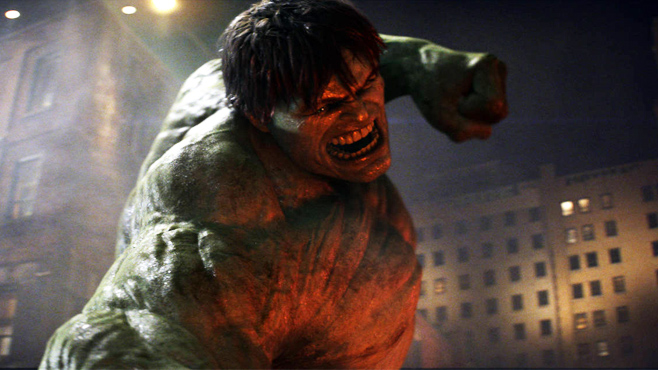

SUPERHUMAN STRENGTH 
The Hulk’s strength is immense, allowing him to stop foes even bigger than he is with a single blow, to throw massively heavy objects, and to tear apart metal as though it were paper.


Bruce Banner
Following his accidental exposure to gamma rays saving the life of Rick Jones during the detonation of an experimental bomb, Banner is physically transformed into the Hulk when subjected to emotional stress, at or against his will, often leading to destructive rampages and conflicts that complicate Banner's civilian life. The Hulk's level of strength is normally conveyed as proportionate to his level of anger. Commonly portrayed as a raging savage, the Hulk has been represented with other personalities based on Banner's fractured psyche, from a mindless, destructive force, to a brilliant warrior, or genius scientist in his own right.
The Hulk’s strength is immense, allowing him to stop foes even bigger than he is with a single blow, to throw massively heavy objects, and to tear apart metal as though it were paper.
Slamming his hands together, the Hulk can create a massive concussive wave.
The Hulk’s skin is able to withstand a tremendous amount of injury and he is able to heal far quicker than a normal human when harmed.